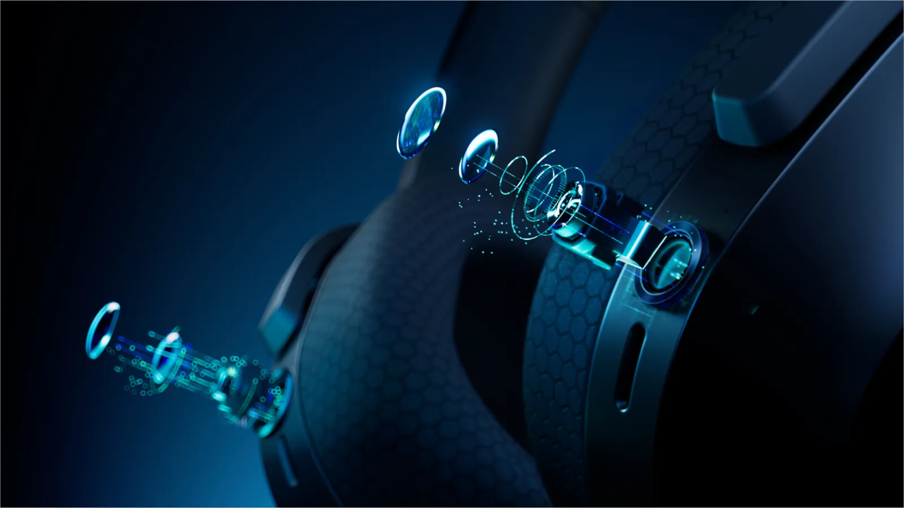
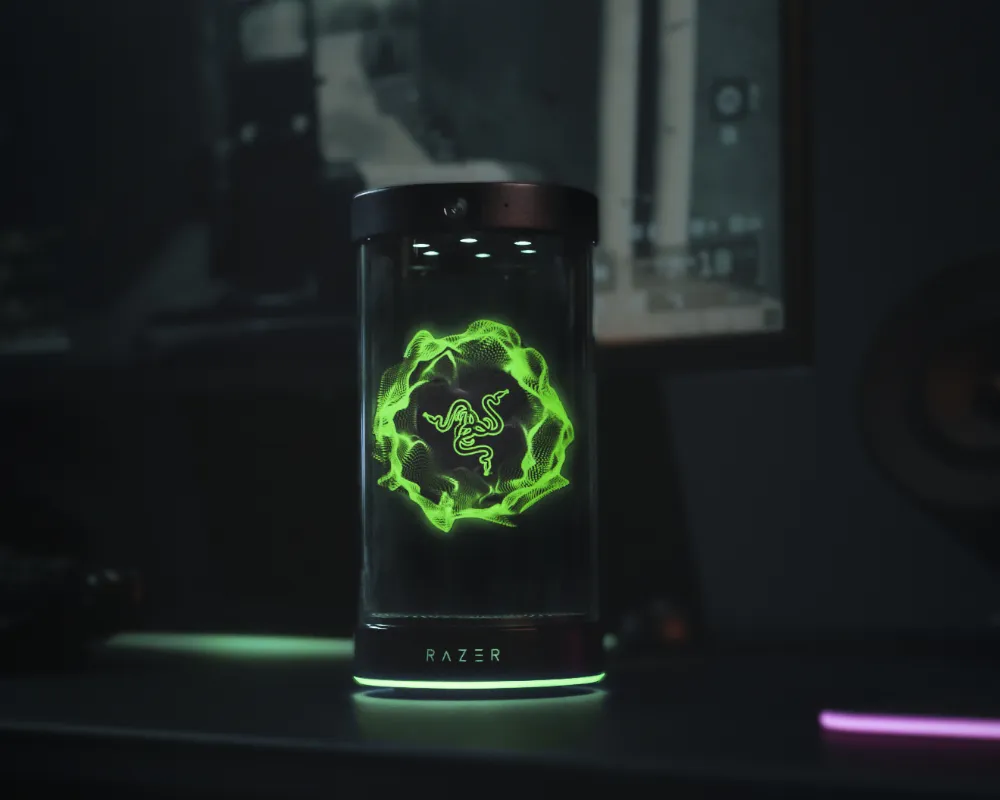
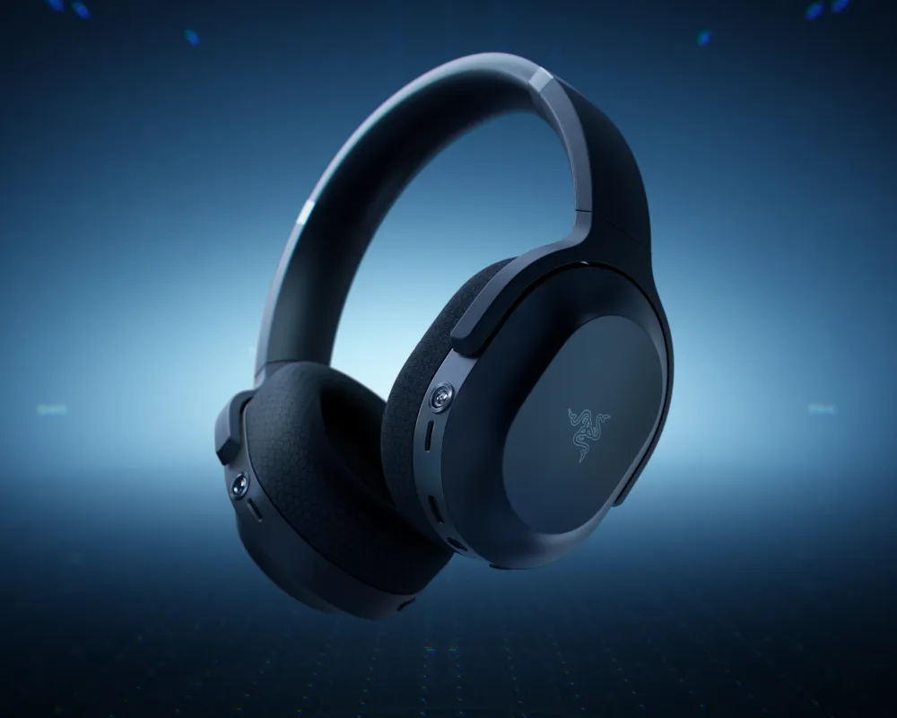
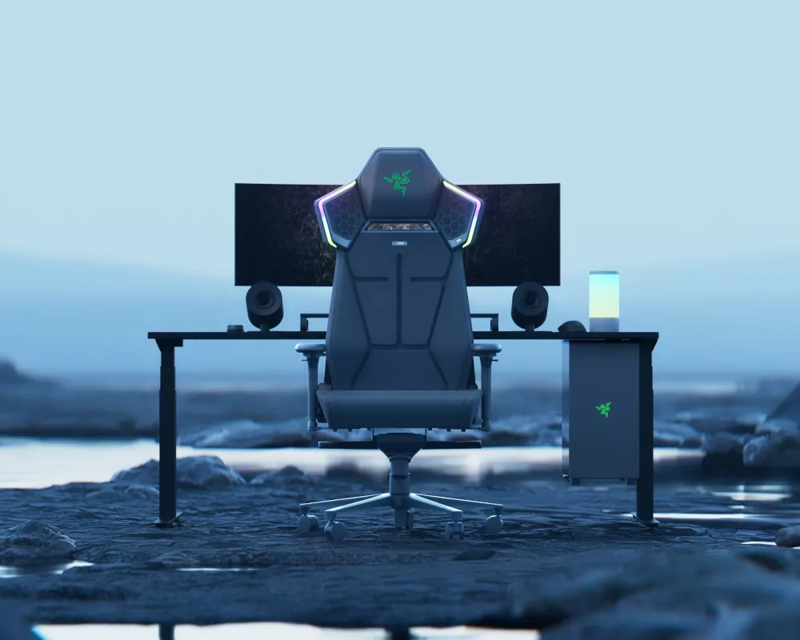
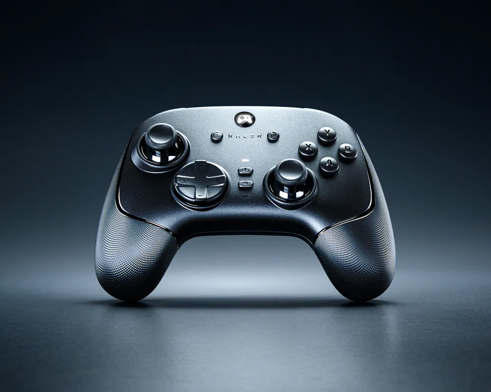

Razer reinventa el gaming con IA: de una silla háptica a un asistente que te entrena

Siendo una de las compañías más grandes que hay dentro de los productos orientados para jugadores, Razer también ha presentado sus novedades en el CES. Esta vez la marca ha dado a conocer su forma de entrar al mercado relacionado con la IA. Pero también han dado a conocert algunos dispositivos que elevarán todavía más la experiencia de los usuarios. Durante diciembre de 2025, desde PCHardware pudimos asistir al pre-briefing que Razer tenía preparado para dar a conocer lo que presentarían durante el Consumer Electronics Show. En este caso nos presentaron sus principales novedades como Project Motoko, pero también se reservaron algunas que presentarían específicamente en el evento en vivo. Estos son todos los productos que la marca ha enseñado.
Razer Project AVA
Empezando por la novedad más curiosa de la compañía tenemos el primer asistente virtual creado por IA especializado en el juego competitivo. Y es que Razer la presentado Project AVA como una evolución frente a los sistemas que ofrecen marcas como NVIDIA o Microsoft. En este caso AVA utiliza un dispositivo físico con un avatar animado de 5,5 pulgadas para convertirse en un compañero de escritorio con IA.
Entre sus ventajas encontramos una serie de funciones como el modo PC Vision, que permite a la IA ver la pantalla del usuario para ayudarle a tomar decisiones en tiempo real. Esto combinado con aspectos de hardware como una cámara HD, seguimiento ocular y un micrófono de gran calidad permiten convertirlo en un compañero del día a día. Y además permite elegir una gran cantidad de avatares creados por Razer, así como otros basados en colaboraciones con leyendas de los eSports.
Razer Project Motoko
Continuando con los periféricos que incluyen IA uno de los grandes productos que la marca tenía previsto mostrar son sus nuevos auriculares. Project Motoko es un periférico de audio creado en colaboración con Qualcomm con una estética muy similar a los Barracuda X de la marca, pero que incluye funciones avanzadas de inteligencia artificial. En este caso no se limita solo ofrecer compatibilidad con los principales modelos desarrollados por marcas como OpenAI, Meta o Google, sino que va más allá.

Estos auriculares incorporan dos cámaras frontales ajustadas a la altura de los ojos con una resolución 3K y una grabación a 60 FPS. Estas permiten ver lo mismo que el usuario y pueden vincularse a las distintas inteligencias artificiales para ofrecer contexto adicional. Esto significa que permiten preguntar a chatbots como ChatGPT sobre lo que el usuario está viendo en cada momento, mientras que el agente IA le contestará en forma de audio. Además de esto, el headset incluye micrófonos duales que permiten ANC combinado con audio ambiental, permitiendo al usuario aislarse por completo o hacer precisamente lo contrario.
Razer Project Madison
No todas las compañías tienen las mismas propuestas para mejorar la inmersión de los jugadores. Y es por ello que Razer siempre va un paso más allá en cuanto a sensaciones se refiere. Project Madison es la nueva silla de la marca que busca combinar la comodidad con la inmersión, todo gracias a dos diseños que seguramente a más de uno le sonará. Esta silla no es nada más y nada menos que una silla gaming que integra un sistema háptico.

En este caso la compañía ha escogido los diseños de otros productos como la almohadilla Freyja y el cojín háptico con altavoces «Project Carol», todo unido en una silla. Esta cuenta con una respuesta háptica de seis zonas propulsada por los motores Razer Sensa HD, mientras que también incluye un sistema de audio espacial THX. Como podéis imaginar, también cuenta con un sistema de LEDs RGB que se pueden configurar a través de la aplicación Chroma.
Razer Wolverine V3 Bluetooth
La compañía también ha presentado algunas de las colaboraciones que tienen previstas con otras marcas. Antes hemos visto los auriculares desarrollados junto con Qualcomm, pero esta vez el Razer Wolverine V3 recibirá una actualización por una colaboración con LG. Y es que este mando tendrá una versión optimizada para los televisores de la marca, aunque será compatible con prácticamente cualquier dispositivo.

Y es que este nuevo modelo será una versión que ofrecerá únicamente una conexión a través de Bluetooth. La compañía asegura que tendrá un tiempo de respuesta extremadamente bajo de 2 ms, mientras que también tendrá controles adicionales que permitirán usarlo como un mando de TV. Esto significa que tendrá a su vez micrófono para utilizar las funciones de captación de voz. Además contará con joysticks TMR anti-drift e implementará dos botones adicionales en la parte trasera con switches avanzados.